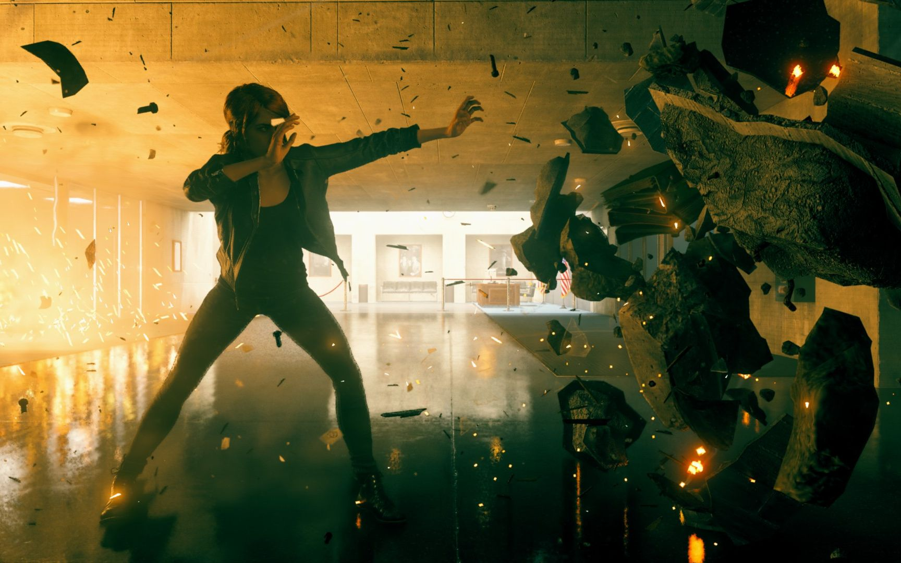

Aunque esto no sea ninguna sorpresa para los que estan al dia de las noticias, ya que en agosto del 2021 Remedy habia aunciado que estaban pensando entrabajar en su desarrollo, el dia de hoy lo confirmaron y "Aunque sea pronto, valdra la pena",tambien confirmaron la co-participacion de 505 Games en el desarrollo al igual que la anterior entrega, que tendra soporte para PC, PlayStation y Xbox Serie X/S.

Esta informacion de llega de Mikael Kasurinen, director de la primera, a traves de un comunicado oficial donde tambien agradecio la recepcion del publico ya que le permitio hacer "algo diferente e ineperado". Por ello con Control 2 planean dar "otro salto a lo desconocido", razon por la que asegura que sera "un viaje inesperado".
Aunque aun no tenemos fecha de lanzamiento, Kasurinen dijo que "Aunque sea pronto, la espera valdra la pena" tambien agrego que es "el proyecto mas emocionante en el que a trabajado", a esta declaracion Rami y Raffi Galante, CEO de 505 Games, agregaron: "Control es la mayor invercion que ha hecho 505 Games (...) Estamos muy emocionados de sacar Control 2 ". De momento se desconocen mas detalles, ya que es una apuesta largo plazo.